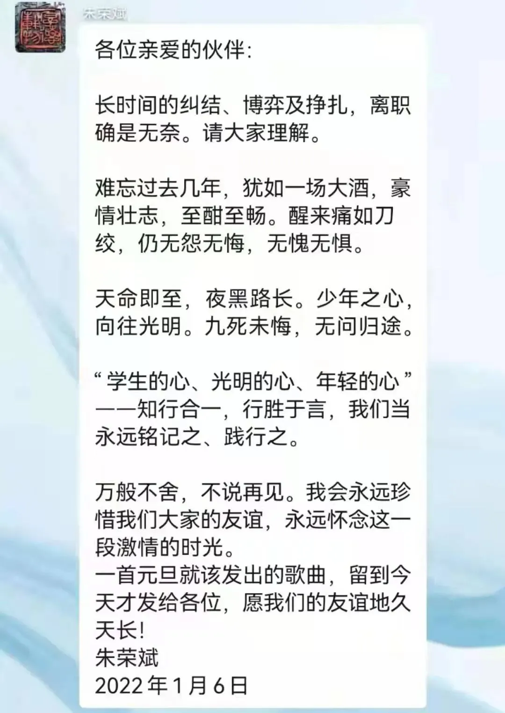

最苦是白衣
每天面对1200+个的问题，而我只有3小时的时间能分配给公众号，去掉写稿改稿的时间，每天仅能回复180-200个问题左右。
所以今年不想浪费精力伺候黑子，有一个拉黑一个。有限的精力只能分配给忠实的读者们。
NO. 1｜壹
2021年11月上旬，华夏幸福和员工签协商解除劳动合同时，承诺被裁员工：签字可以拿到补偿。
华夏幸福表示，按最低赔偿标准，签了字就能拿补偿 。不签字，就待岗，每月发最低保障工资和社保。 华夏幸福卖资产时，已把补偿金预算都包含在内 。
员工出于对公司的信任，签字。当时还有恰烂饭的自媒体对华夏幸福和王文学唱了一通赞歌，将其列为楷模。 王文学和华夏幸福赚到了满满的赞誉 。
12月4日，即华夏幸福发薪前一天，人力通知要缓一个月发补偿金，即2022年1月5日发。 众人出于对公司的信任，也理解公司的难处，毫不犹豫就答应了 。
1月5日，华夏幸福和王文学的人设崩塌：不仅不发约定的补偿金，反而怪被裁的员工不理解他，怎么好意思讨要补偿金?
被裁后，这些人没有工作，还有房贷，有家有孩子，还要过年。有的人不仅贷款都还不起，连孩子新学期的学费也是个问题.....
他们在断粮一个月后还能理解公司的难处，愿意推迟公司答应的赔偿金，但华夏幸福和王在吃抹干净，赚满声誉后，居然反过来指责这些被裁员工。
员工对公司和老王是真正的信任， ** 就算被你的枪击中，也相信那是走火。如今他们才发现，原来是自己走火入魔 ** 。
** 最苦是白衣 ** ......
... ...
一个月前，富力地产出方案拟83折回购1月13日到期的7.25亿美元优先票据， 即每 10 00 美元 面值的本金折价收到8 30美元 及利息。
昨天，富力称这方案获得了约71.69%的有效投票。 超七成的票据持有人不惜折价回购，也要让资金落袋为安 。
但富力后续能否顺利履约，依我对富力地产财务状况的了解，觉得需要打个问号。
NO. 2｜贰
阳光城的执行董事长兼总裁朱荣斌离职，亿万富翁缩水成千万富翁的故事今天刷爆了朋友圈。
2017年7月加盟阳光城至本月离职，刚好4年半。朱荣斌先后耗资1.36亿元买入阳光城2200余万股股票，如今割肉，阳光城股价比腰斩还惨。剔除朱荣斌这几年领取的薪酬，他还要倒贴约4250万元。
朱荣斌和吴建斌这双斌，从 能力上来说没问题，就是掣肘较多，展不开手脚 。也常研究他们的一些战略战术，在我个人认知中，他们属于有水平有能力的人。
** 野心很大，又很难彻底信任和放权给职业经理人，喜欢搞平衡等权谋之术，这是闽系房企老板的通病 ** 。阳光城的林腾蛟算比较轻微的，但也有这方面的问题。
闽系房企的老板，大多数较熟，个人印象中他们各有特色：阳光城的林腾蛟半退半隐，但可以放权，但信任期有限，野心极大，以前十为目标；泰禾的黄其森，好大喜功，事事亲为，喜欢玩权衡之术；融信的欧宗洪、三盛的林荣新、禹洲的林龙安、中骏的黄朝阳等比较相似；自恋，总觉得自己帅过梁朝伟的正荣欧宗荣，又是另一类.....
擅长在资本市场舞袖的林腾蛟，在2018年和46岁的朱荣斌探讨阳光城未来战略时，曾提出冲刺前十的野望。朱荣斌按下了这个不太切实的方案。
2020年中下旬，因为战投引入泰康的事，林腾蛟和朱荣斌不复之前的甜蜜岁月，渐有嫌隙。
两年前，我个人曾基于阳光城这家企业内部问题和用人问题，发过对阳光城不太看好的观点。当时阳光城的李晓冬，后来居然升职了。
再后来的事，大家都知道了，阳光城陷入困境，并非我乌鸦嘴，只是了解得多一些而已。
今天，朱荣斌在阳光城集团总部群402人的发了一则告别信，可以从中窥探到他内心挣扎过的痕迹：

算了算，朱荣斌快50岁了，五十知天命。阳光城履职四年半，在如今高管高周转的地产行业，难得。
** 人们常说，四十不惑，三十而已。三十多岁的地产人，卡在了中间，困惑不已 ** 。
有些路走错了，就不要继续直行，而是要拐弯。如果前方路窄，就要及时掉头。
NO. 3｜叁
不久前，把总部大楼抵押了的 禹洲集团 ，在公告中透露着自己不差钱。 昨天就发公告称， ** 旗下的物业公司以不高于10.6亿元的价格， 卖给 央企华润 ** 。
走到卖物业公司的房企，一般都是极度缺钱，资金困局下的无奈之举。转让资产是为了快速回笼资金，抵押总部大楼也是为了获取现金流。
** 禹洲的美元债发债总额达60.27亿美元 ** ，仅次于恒大、佳兆业、碧桂园、融创。 排在 禹洲后面的是世茂房地产，57.20亿美元。 本月，禹洲将有5.79亿美元的美元债到期 。
按目前的情况来看，禹洲的选择不多，进行美元债置换是选项之一。
二次递表失效想IPO的禹洲物业， 先天不足、 规模不大、数据也很平庸，如果华润最终以10.6亿元的价格来收购，那就太贵了，PE高达22倍 。
或许，最终的成交价格会更低。
禹洲不久前公告中透露的“不缺钱”的自欺欺人之语，没多久就被自己无情踢爆了，属实有点惨。 其实每个人都擅长骗人，尤其是骗自己，有时候，人的自欺能力是无限的 。
... ...
世茂集团通知缓发工资至本月20日，同时对组织架构做了些调整。
中诚信托发布世茂信托产品涉嫌违约， 世茂集团今天回应称，中诚信托因自身前期投资管理不善，不良较多，所以无故要求在正常履约的项目抽贷 。先是无理由停止项目用印及付款审批，后更在不达付款时间的情况下要求提前还款，径自采取诉讼措施。甚至在中诚信托起诉的前一天，世茂仍在与对方沟通并分批还款。
这事其实 要看当时双方签订的合同内容，一般来说，这类合同都有涉及提前还款的条款。触发了条款，则信托方有权要求提前还款 。看看合同内容，才知道谁占理。
人生就是这样，你常以为是他需要你，但其实是你需要他。现在的世茂，显然更需要债权方的支持。前一个这么刚硬怼债权方的，是恒大，当时的债权方是广发。
写到这里，发现原本要说的蓝光1元卖3项目，其实是财技的事，因为篇幅原因，只能推迟到下期了。
但整篇文章，其实都指向一个共通点：
** 自欺是本能，自省不是 ** 。人往往善于自欺，不善自省。
按日期浏览全部来源（同日按条目标识排序）